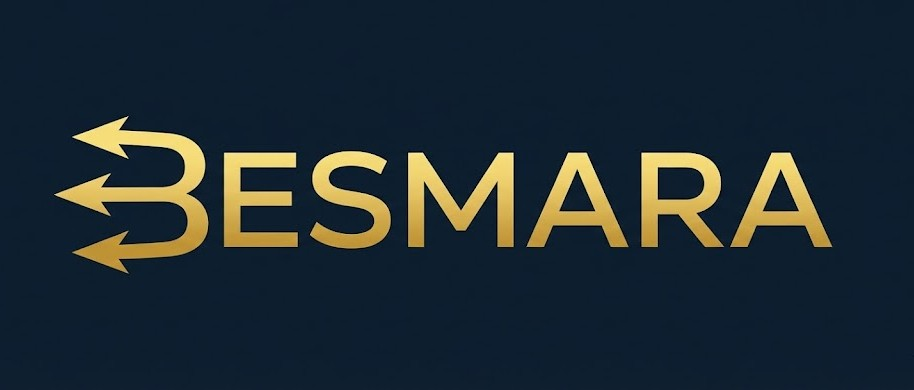

⚓ Ex-Chef Mecanicien Naval
L'IA au service de la peche & l'aquaculture
Automation & workflows IA
Yoann, fondateur de BESMARA, transforme 12 ans d'experience en mer en solutions IA concretes pour votre activite maritime.
12 ans
en mer
50+
projets IA
100%
autodidacte
